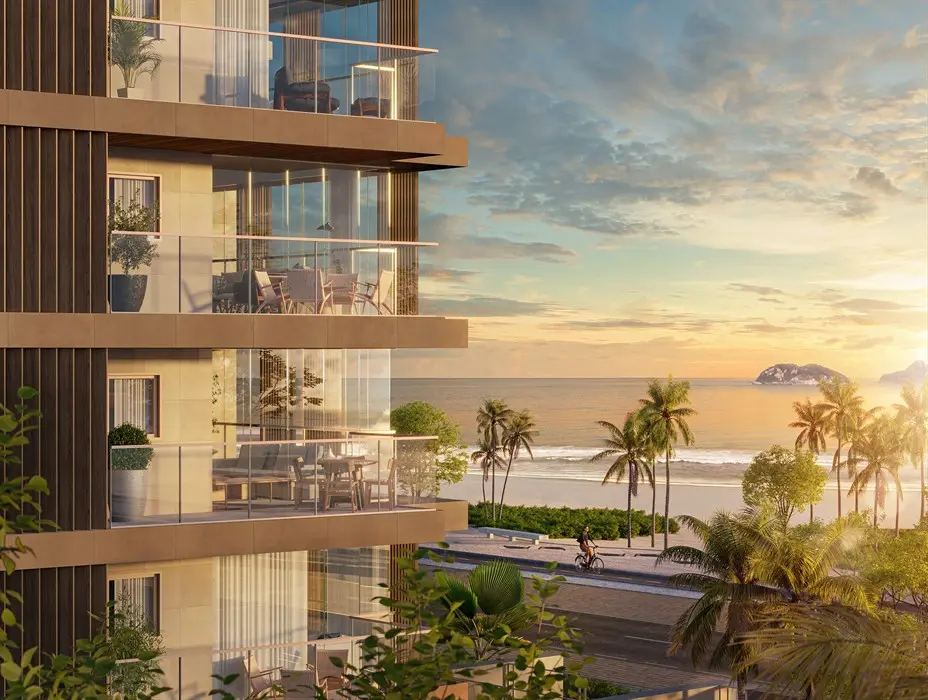

Imagens


Galeria
Imagens ilustrativas, de caráter artístico, conforme material da incorporadora.

Fantástico apartamento no Pepê
Ser carioca é sentir o sol no rosto, a areia entre os pés e a brisa como se fosse um abraço.
É respirar natureza e bem-estar todos os dias.
Melhor ainda quando se está cercado pelo azul do mar, o verde da Pedra da Gávea, o píer revitalizado trazendo toda a conveniência de que você precisa. Sem falar na proximidade da Av. das Américas e da Zona Sul.
Agora, este endereço vai receber um projeto inovador para ressignificar o que é beleza, lazer e felicidade.
Metragens, tipologias e disponibilidade conforme material oficial da incorporadora, sujeitos a alteração sem aviso. Valores e condições confirmados na tabela vigente. Seleção e atendimento: Paulo Cotrim, CRECI-RJ 77677-F.
Imagens ilustrativas, de caráter artístico, conforme material da incorporadora.